TrIdent - Transduction Identification 
TrIdent automates the analysis of transductomics data by detecting, classifying, and characterizing read coverage patterns associated with potential transduction events.
Transductomics, developed by Kleiner et al. (2020), is a DNA sequencing-based method for the detection and characterization of transduction events in pure cultures and complex communities. Transductomics relies on mapping sequencing reads from a viral-like particle (VLP)-fraction of a sample to contigs assembled from the metagenome (whole-community) of the same sample. Reads from bacterial DNA carried by VLPs will map back to the bacterial contigs of origin creating read coverage patterns indicative of ongoing transduction. The read coverage patterns detected represent DNA being actively carried or transduced by VLPs. The read coverage patterns do not represent complete transduction events (i.e integration of transduced DNA into new bacterial chromosomes).
To obtain the data needed for transductomics, a microbiome sample of interest is split to prepare two sub-sample types: - Whole-community: Represents the ‘whole-community’ (all bacteria, fungi, virus, etc) in the microbiome of interest - VLP-fraction: Represents only the virus and ‘viral-like particles’ associated with the microbiome of interest - The VLP-fraction must be obtained by an appropriate ultra-purification protocol for your sample type to remove bacterial cells and contaminating free bacterial DNA.
With transductomics and TrIdent, a researcher can obtain information about the phage-host pairs involved in transduction, the types of transduction occuring, and the region of the host genome that is potentially transduced, which allows exploration of transferred genes.
Reference: Kleiner, M., Bushnell, B., Sanderson, K.E. et al. Transductomics: sequencing-based detection and analysis of transduced DNA in pure cultures and microbial communities. Microbiome 8, 158 (2020). https://doi.org/10.1186/s40168-020-00935-5
Input files
TrIdent detects read coverage patterns using a pattern-matching algorithm that operates on pileup files. A pileup file is a file format where each row summarizes the ‘pileup’ of reads at specific genomic locations. Pileup files can be used to generate a rolling mean of read coverages and associated base pair positions across a metagenome assembly which reduces data size while preserving read coverage patterns. TrIdent requires that input pileups files be generated using a 100 bp window/bin size.
Some read mappers, like BBMap, will allow for the generation of pileup files in the bbmap.sh command with the use of the bincov output with the covbinsize=100 parameter/argument. Otherwise, BBMap’s pileup.sh can convert .bam files produced by any read mapper to pileup files compatible with TrIdent using the bincov output with binsize=100.
TrIdent requires two pileup files from a transductomics dataset as input:
- A VLP-fraction pileup: Sequencing reads from a sample’s ultra-purified VLP-fraction mapped to the whole-community metagenome assembly from the same sample.
- A whole-community pileup: Sequencing reads from a sample’s whole-community mapped to the whole-community metagenome from the same sample.
The data used for each pileup file must originate from the same sample. Pileup files must use a 100 bp window/bin size for the rolling mean.
Transductomics sample preparation, sequencing procedures, and analysis methods are detailed in Kleiner et al. (2020)
Installation
Install TrIdent with BiocManager:
if (!require("BiocManager", quietly = TRUE)) {
install.packages("BiocManager")
}
BiocManager::install("TrIdent")
library(TrIdent)Install the development version of TrIdent through Github with BiocManager:
Quick Start
## Load TrIdent
library(TrIdent)
## Load sample datasets
data("VLPFractionSamplePileup")
data("WholeCommunitySamplePileup")
## Run TrIdent:
## Run first:
TrIdentOutput <- TrIdentClassifier(
VLPpileup = VLPFractionSamplePileup,
WCpileup = WholeCommunitySamplePileup
)
#> Reformatting pileup files
#> Starting pattern-matching...
#> A quarter of the way done with pattern-matching
#> Half of the way done with pattern-matching
#> Almost done with pattern-matching!
#> Determining sizes (bp) of pattern matches
#> Identifying highly active/abundant or heterogenously integrated
#> Prophage-like elements
#> Finalizing output
#> Execution time: 14.56secs
#> 1 contigs were filtered out based on low read coverage
#> 0 contigs were filtered out based on length
#>
#> HighCovNoPattern NoPattern Prophage-like Sloping
#> 1 1 4 3
#> 3 of the prophage-like classifications are highly active or abundant
#> 1 of the prophage-like classifications are mixed, i.e. heterogenously
#> integrated into their bacterial host population
## Run second:
plotTrIdentResults(
VLPpileup = VLPFractionSamplePileup,
WCpileup = WholeCommunitySamplePileup,
TrIdentResults = TrIdentOutput
)
#> $NODE_62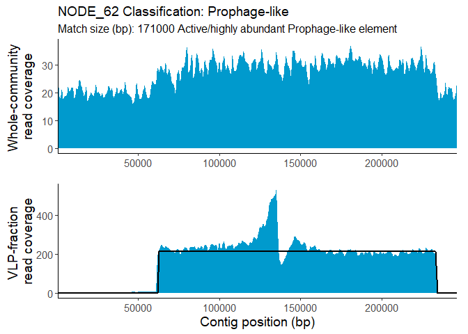
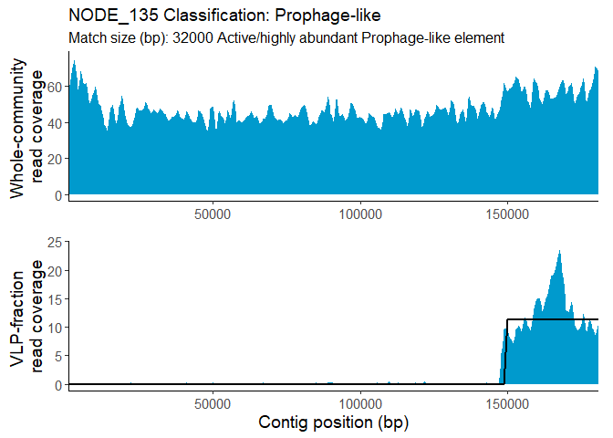
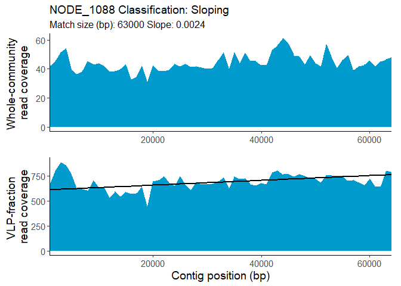
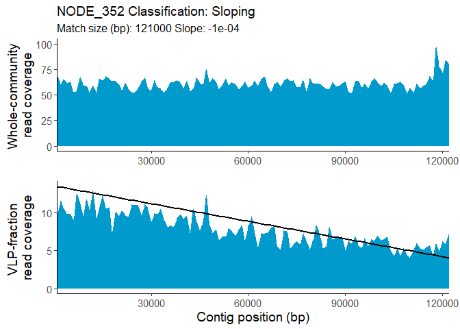
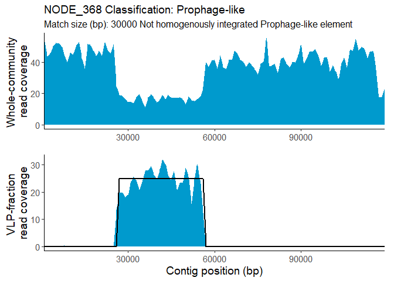
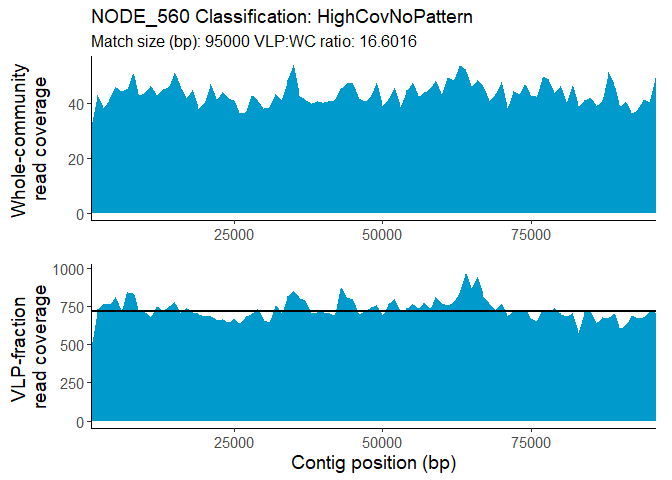
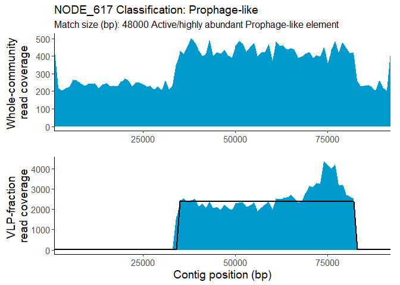
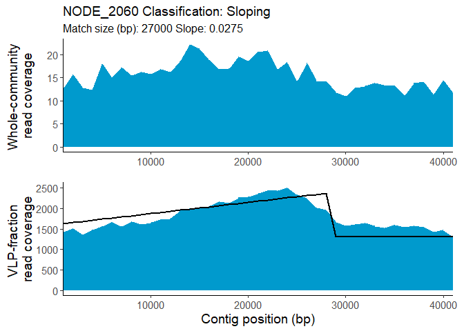
## Run third:
specializedTransductionID(
VLPpileup = VLPFractionSamplePileup,
TrIdentResults = TrIdentOutput
)
#> 2 contigs have potential specialized transduction
#> We recommend that you also view the results of this search with
#> logScale=TRUE
#> $summaryTable
#> contigName specTransduc left right lengthLeft lengthRight
#> 1 NODE_62 yes yes no 45400 <NA>
#> 2 NODE_135 no no no <NA> <NA>
#> 3 NODE_368 no no no <NA> <NA>
#> 4 NODE_617 yes yes yes 33300 9800
#>
#> $Plots
#> $Plots$NODE_62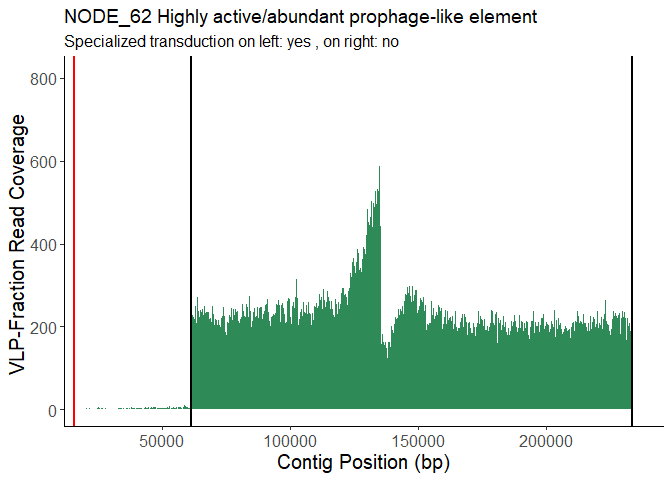
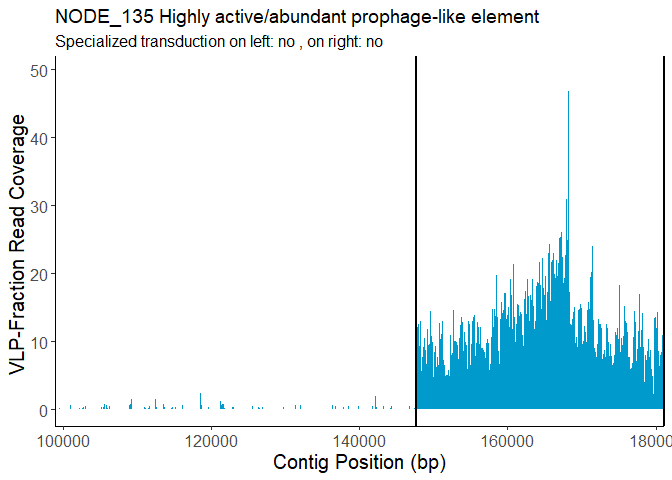
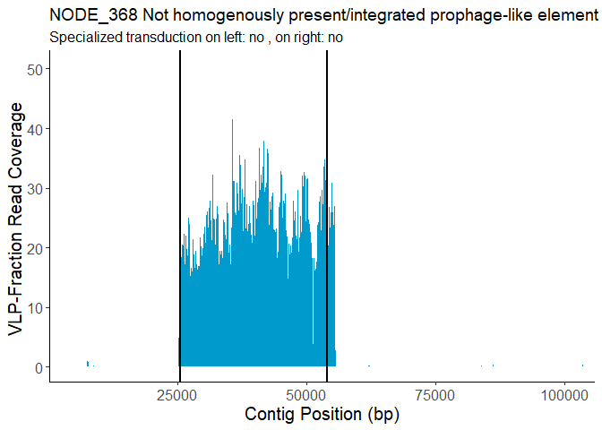
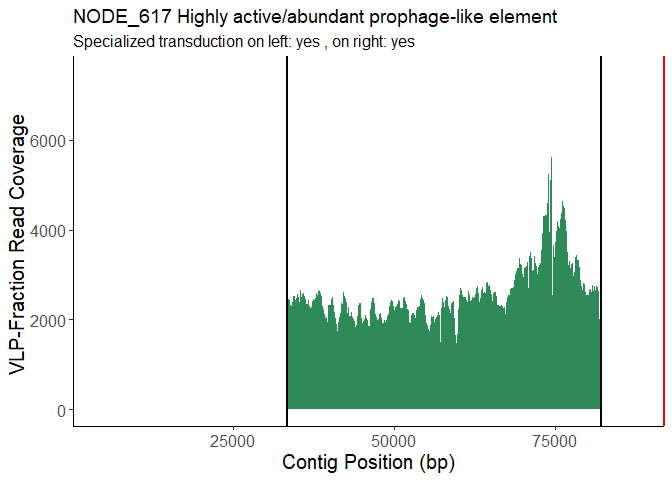